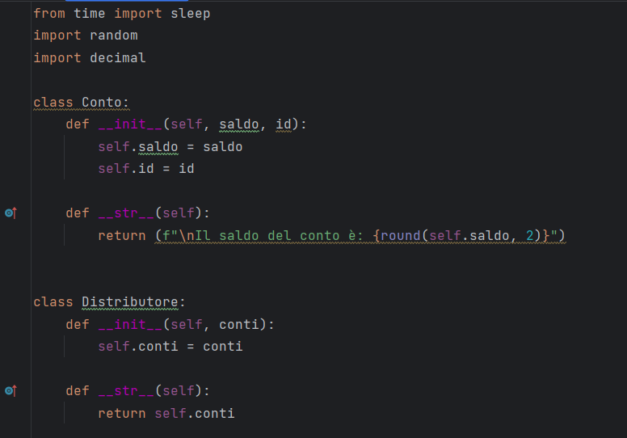
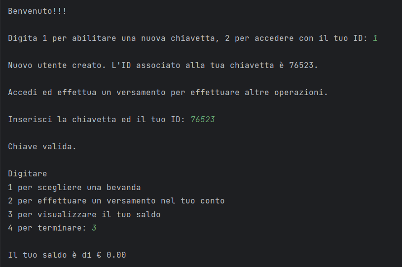
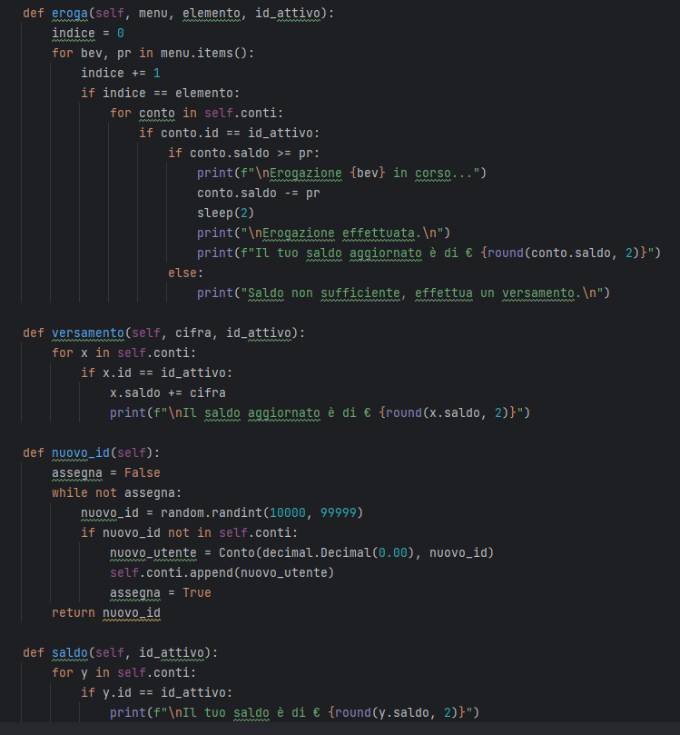
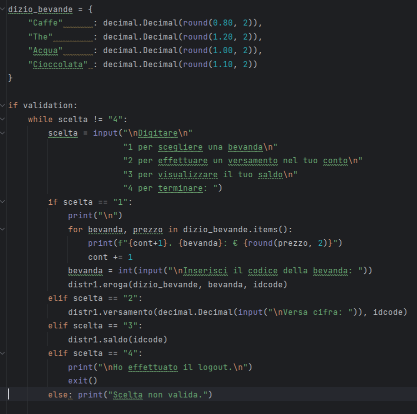
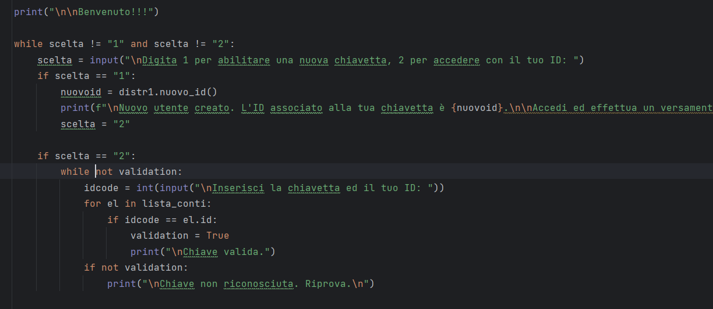
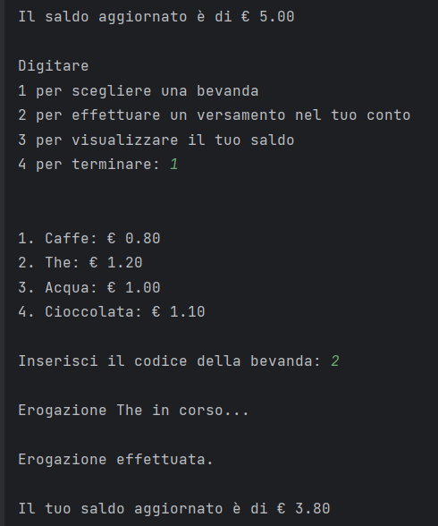

Il progetto gestisce un distributore di bevande.
La struttura si basa su due classi, Conto e Distributore.
La classe Conto contiene ID univoco e saldo residuo di ogni utente.
La classe Distributore raccoglie una lista di tutti i conti ed all'interno di essa sono definiti
tutti i metodi utilizzati nel progetto.
Il metodo Nuovo_id abilita una nuova chiavetta associandogli un ID di 5 cifre generato in maniera casuale,
verifica che non sia già stato assegnato ad altre chiavette ed inizializza a 0 il saldo.
Con il metodo Versamento l'utente può scegliere la cifra da versare e con Saldo visualizza il residuo sul conto.


Quando l'utente si logga, il suo ID viene salvato in una variabile per essere passato ai vari metodi.
La lista di bevande è definita in un dizionario contenente nome e prezzo.
Il metodo Eroga riceve come parametro il dizionario, l'id dell'utente attivo ed il codice della bevanda
che l'utente ha selezionato tra le opzioni di scelta.
Con due cicli for annidati viene agganciato il conto dell'utente attivo, viene identificato il prezzo della
bevanda e viene verificato il saldo disponibile.
Se il credito è sufficiente viene erogata la bevanda e
viene scalato il prezzo dal saldo.
Per simulare la durata dell'erogazione in corso è stata utilizzata la
funzione Sleep.

La main si sviluppa su due cicli While.
Il primo ciclo chiede all'utente se vuole loggarsi o se vuole attivare una nuova chiavetta e si ripete fino
a quando non viene effettuato con successo il login, visualizzando un messaggio di errore in caso di esito
negativo.
A login effettuato viene attribuito True ad una variabile booleana.
Il secondo While visualizza un nuovo elenco di opzioni e parte solo se questa variabile ha valore positivo.
Qui l'utente può scegliere di visualizzare il saldo, effettuare una ricarica, ordinare una bevanda o disconnettersi.
Se sceglie di ordinare, verrà stampato il dizionario delle bevande disponibili con il relativo prezzo e
l'utente potrà selezionarle tramite il numero progressivo assegnato alla bevanda.
Il ciclo si ripeterà fino a quando l'utente non seleziona l'opzione per terminare.


